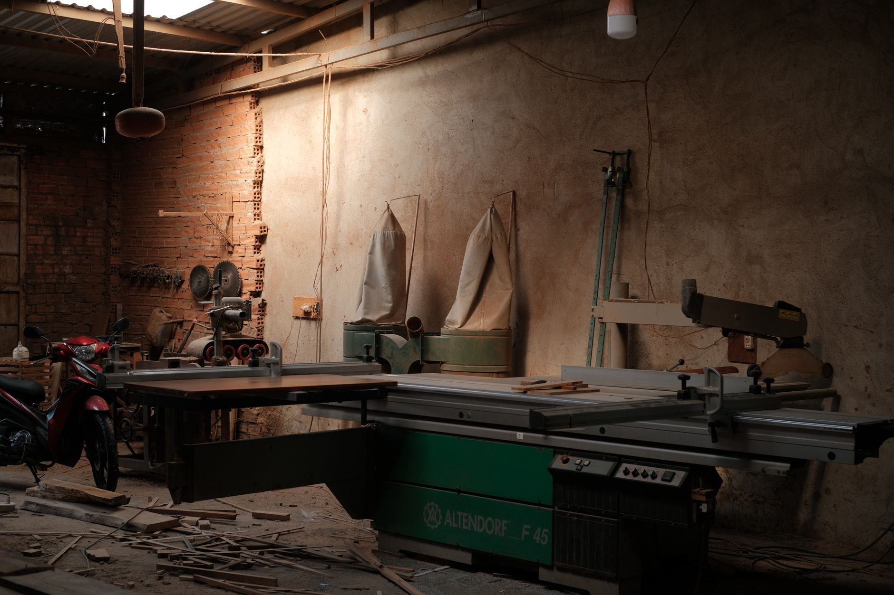

About the shop
Custom hardwood furniture, built one commission at a time. Three people, one building, roughly thirty pieces a year.

The shop
We work out of Building 3 at 41 Cornell Street in Kingston, a brick machine building put up in 1948 and converted to studios in 2009. Our floor is 1,900 square feet: machine room at the back, two assembly bays in the middle, a finishing room with its own door and its own air, and a rack of drying timber along the north wall.
It is not a showroom. There is sawdust on most surfaces and usually a table on its back with the legs in the air. Everything that leaves here is made in this room, start to finish — we do not subcontract parts, and we do not buy in components except hardware, glass and stone.
- Floor area
- 1,900 sq ft
- At the bench
- 3 people
- Commissions a year
- 28–34
- Opened
- March 2014
Who builds your furniture
You will deal with one of us from the first email to the day the piece is uncrated. There is no sales desk in between.
-
Dana Ruhl — owner, design and joinery
Trained at the North Bennet Street School, then eight years building casework in Brooklyn before opening this shop in 2014. Dana draws every commission, picks the boards, and cuts the joinery on case pieces and tables. She is the person who answers the phone.
-
Arthur Veliz — machining and milling
Twenty-two years running industrial woodworking machinery, the last nine here. Arthur breaks down rough stock, runs the jointer, planer and wide-belt sander, and keeps the moisture meter honest. If a board is going to move, he usually says so a week before it does.
-
Priya Mehta — finishing and chairs
Came to us in 2019 from a violin restoration bench. Priya does all the shellac work, every hardwax oil coat, and the shaped seating — stools, chairs, anything that gets a spokeshave. She also builds the crates, which is less glamorous and just as careful.
We turn down about a third of the work we are offered. Usually because the deadline is shorter than the wood will allow, and we would rather say no in May than apologise in September.
Dana Ruhl
Where our timber comes from

Almost everything we build is Northeastern hardwood, bought as rough-sawn lumber and milled here. Three sources, in roughly this order:
-
Regional mills
White oak, red oak, cherry, hard maple and ash from four mills in Ulster, Greene and Delaware counties, plus one in Bradford County, Pennsylvania for wide walnut. We buy in the log or by the pack, mostly 8/4 and 12/4, and we go and look at it first.
-
Urban salvage
Street and yard trees taken down in Kingston, Rhinebeck and Beacon — mostly black walnut, elm and sycamore — slabbed at a portable mill and dried on our rack. Character is unpredictable and so is yield. We price these boards separately and show them to you before we cut.
-
Kiln schedules
Stock comes to us at 6–8% moisture content, then sits stickered in the shop for at least four weeks before it is touched. We meter every board on the day we mill it. Anything above 9% goes back on the rack. This is the main reason our lead times read the way they do.
We do not use tropical species, veneered panel or MDF cores in commissioned work. Drawer boxes are solid quartersawn maple or poplar; backs and bottoms are solid panels, floating in grooves, the way they have been for three hundred years.
Finishes
Two finishes cover nearly everything we make.
Hardwax oil
Our default for tables, desks, worktops and anything that gets used hard. Two or three thin coats, buffed in, cured for seven days before the piece ships. It leaves the wood feeling like wood. When a glass ring or a knife score appears in year four, you can abrade that spot and re-oil it yourself in twenty minutes — no stripping, no specialist, no shipping the top back to us. We send a 125 ml tin with every oiled piece.
Shellac
For case pieces, cabinet interiors and anything where we want depth and a little warmth in the colour. Blonde or garnet flakes, cut fresh, padded on in many thin coats and rubbed back to a soft sheen. It is repairable with more shellac, it does not yellow the way an oil-varnish does, and it smells like nothing but alcohol an hour after it goes on.
Why we do not spray lacquer
Sprayed catalysed lacquer is faster and harder, and we understand why production shops use it. But it needs a booth, extraction and a respirator schedule we would rather not run in a 1,900 sq ft room where we also eat lunch. More to the point, when it fails it fails as a film: it chips, it clouds, and the fix is to strip the whole surface. A finish that only a refinisher can repair is not a finish we want to put on a table you will keep for forty years.
- Oil cure before shipping
- 7 days
- Shellac coats, typical
- 8–12
- Touch-up tin supplied
- 125 ml
Visiting the shop
41 Cornell Street, Building 3, Kingston, NY 12401. Street parking on Cornell; the loading door is on the east side, and the bell is the brass one.
Open bench hours
First Saturday of each month, 10am to 2pm. No appointment needed. Come and look at what is on the benches, ask what a dovetailed drawer costs, handle the sample boards. Children are welcome if they stay out of the machine room. We stop the machines during open hours, so it is a reasonable place to have a conversation.
Booking a timber viewing
If you have a commission underway — or are close to placing one — we set aside an hour on Tuesday and Thursday afternoons to pull boards for you. We lay the candidate stock out on the assembly table, chalk the rough layout on it, and you choose. Most people change their minds about colour once they see cherry and walnut side by side in daylight.
Tell us roughly when you would like to come and which species you want to see, and we will confirm a time by email within two working days.
Come and stand in the room
Drawings only go so far. First Saturday of the month, 10am to 2pm — or call and we will find you an afternoon.
shop@mortiseandgrain.com · (845) 555-0162